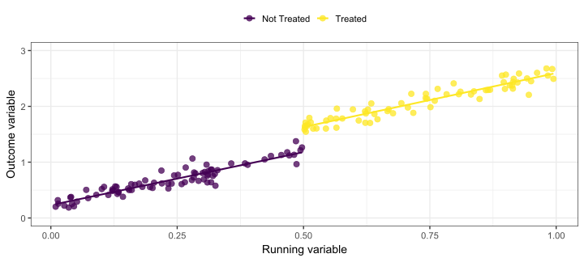
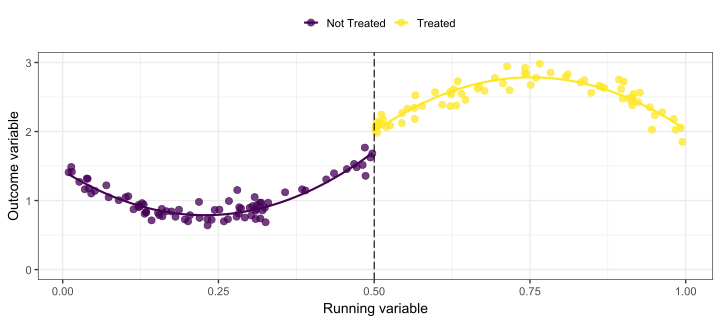
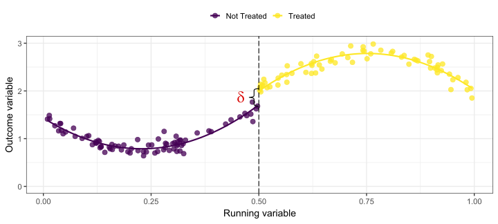
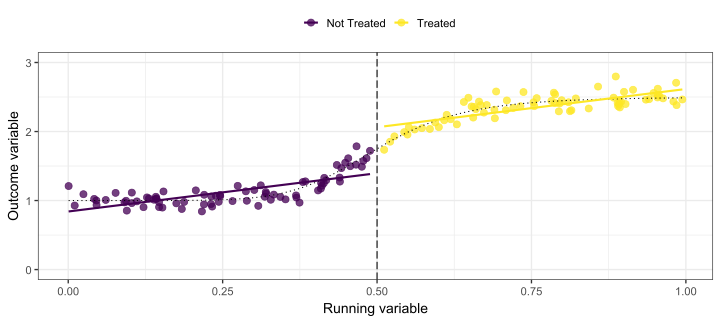
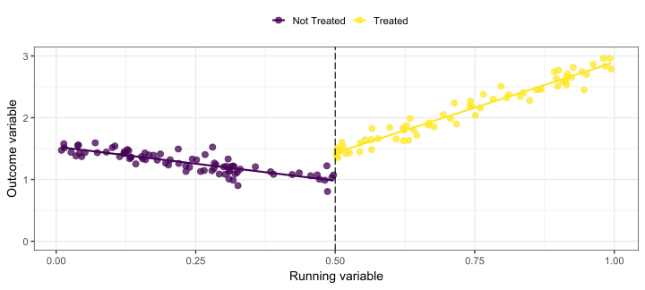
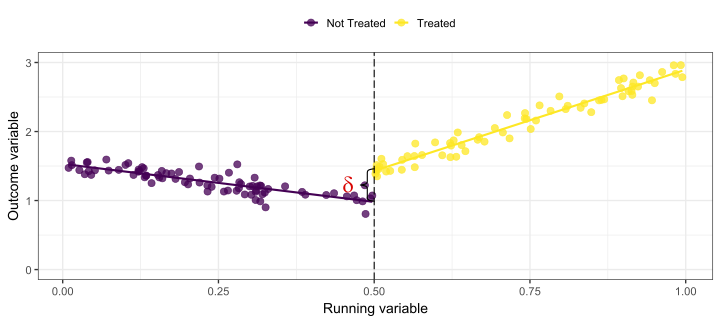
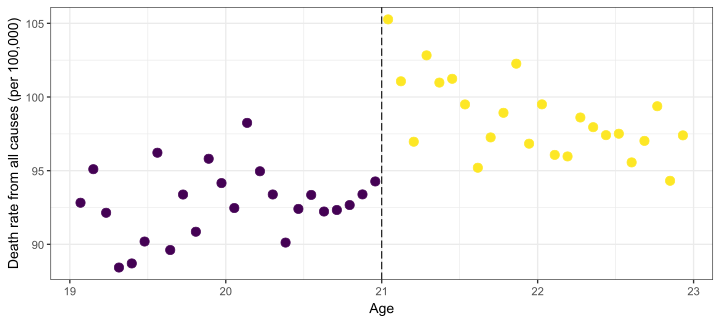
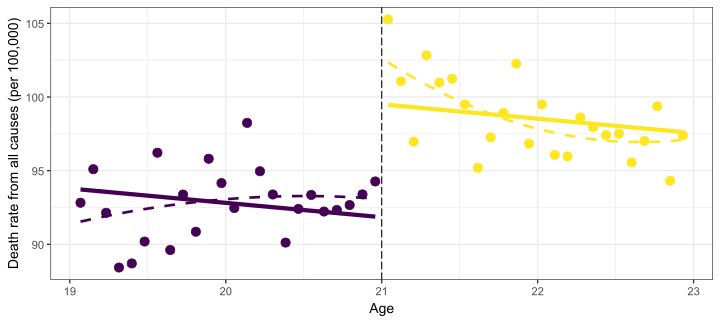

추정 (Estimation)
목적: 절단값에서 두 회귀선 사이의 차이(gap)를 측정하는 것.
가장 간단한 형태의 회귀 모형은 다음과 같음: \[
DEATHRATE_a = \alpha + \delta D_a + \beta a + \varepsilon_i,
\] 여기서 \(DEATHRATE_a\)는 연령 \(a\)에서의 사망률, \(D_a\)는 처치 더미 변수, \(a\)는 나이(21세 생일부터의 개월 수)임.
- \(\delta\)는 21세 이상과 미만 사이의 사망률 차이를 나타냄.
RDD 추정량은 \(a = 21\)에서 조건부 기댓값 함수의 불연속성을 이용함: \[
\underbrace{\lim_{c \to 21^+} \mathbb{E}[DEATHRATE_a|a = c]}_{\alpha + \delta} - \underbrace{\lim_{c \to 21^-} \mathbb{E}[DEATHRATE_a|a = c]}_{\alpha} = \delta
\]
Estimation #1: 단순 선형 모형을 이용한 추정
\[DEATHRATE_a = \alpha + \delta D_a + \beta a + \varepsilon_a,\]
# A tibble: 3 × 5
term estimate std.error statistic p.value
<chr> <dbl> <dbl> <dbl> <dbl>
1 (Intercept) 91.8 0.805 114. 4.59e-57
2 agecell_21 -0.975 0.632 -1.54 1.30e- 1
3 over21TRUE 7.66 1.44 5.32 3.15e- 6
해석 (Interpretation):
평균적으로, 법적 음주 가능 연령(MLDA)은 전체 사망률을 7.66 퍼센트포인트 증가시킴.
이는 상당한 효과이며, 19세부터 22세까지 개인의 평균 사망률은 다음과 같음:
시뮬레이션 - 선형 관계와 명확한 불연속성
\[outcome_i = \alpha + \delta treatment_i + \beta running_i + e_i,\]
시뮬레이션 - 선형 관계와 명확한 불연속성

\[outcome_i = \alpha + \color{#d90502}\delta treatment_i + \beta running_i + e_i,\]
시뮬레이션 - 비선형 관계와 명확한 불연속성
\[outcome_i = \alpha + \delta treatment_i + \beta_1 running_i + \color{#d90502}{\beta_2 running_i^2} + e_i,\]
시뮬레이션 - 비선형 관계와 명확한 불연속성
\[outcome_i = \alpha + \color{#d90502}\delta treatment_i + \beta_1 running_i + \beta_2 running_i^2 + e_i,\]
시뮬레이션 - 선형 관계와 불명확한 불연속성

시뮬레이션 - 다른 기울기
\[outcome_i = \alpha + \delta treatment_i + \beta (running_i - cutoff) + \\ \color{#d90502}{\gamma treatment_i * (running_i - cutoff)} + e_i,\]
시뮬레이션 - 다른 기울기
\[outcome_i = \alpha + \color{#d90502}\delta treatment_i + \beta (running_i - cutoff) + \\ \gamma treatment_i * (running_i - cutoff) + e_i,\]
적절한 함수 형태 선택 방법
데이터를 시각화(visualize)하는 것이 필수적임!
다양한 모형에서 추정된 계수 값이 크게 변하지 않아야 함.
결과 변수와 연속 변수 간의 관계가 비선형일 것으로 예상되는가? 절단값 근처에서 관계가 달라질 것으로 예상되는가?
Gelman and Imbens (2019), “Why High-Order Polynomials Should Not Be Used in Regression Discontinuity Designs”:
“연구자들이 지역 선형(local linear) 또는 이차 다항식(quadratic polynomials) 또는 다른 부드러운 함수(smooth functions)를 기반으로 한 추정량을 사용할 것을 권장함.”
예제로 돌아가기: 비선형성 / 다른 기울기

예제로 돌아가기: 비선형성 / 다른 기울기

- 두 모형에서 선 간의 차이는 대략적으로 동일함.
RDD 가정 (RDD Assumptions)
핵심 가정(Key Assumption): 잠재적 결과(Potential Outcomes)는 절단값에서 매끄러워야 함.
\(\Rightarrow\) 처치 할당 변수(assignment variable)는 조작될 수 없어야 함!
공식적으로: \[
\lim_{r \to c+} \mathbb{E}[Y_i^d|r] = \lim_{r \to c-} \mathbb{E}[Y_i^d|r], d \in \{0,1\}
\]
절단값 바로 아래와 바로 위의 모집단은 불연속적으로 달라서는 안 됨.
만약 개인이 절단값을 알고 있고, 이를 조작할 수 있다면 이 가정이 위배됨.
- 단순히 절단값을 아는 것 자체는 문제되지 않으며, 연속 변수를 조작할 수 있는 능력이 가정을 위배하는 요소임.
RDD 가정 (RDD Assumptions)
핵심 가정(Key Assumption): 잠재적 결과는 절단값에서 매끄러워야 함.
이 가정이 충족되면 다음과 같음:
\[
\begin{align}
&\lim_{r \to c^+} \mathbb{E}[Y_i | R_i = r] - \lim_{r \to c^-} \mathbb{E}[Y_i | R_i = r] \\
= &\lim_{r \to c^+} \mathbb{E}[Y_i^1 | R_i = r] - \lim_{r \to c^-} \mathbb{E}[Y_i^0 | R_i = r] \\
= &\mathbb{E}[Y_i^1 | R_i = c] - \mathbb{E}[Y_i^0 | R_i = c] \\
= &\mathbb{E}[Y_i^1 - Y_i^0 | R_i = c] \\
\end{align}
\]
RDD 가정 (RDD Assumptions)
핵심 가정(Key Assumption): 잠재적 결과는 절단값에서 매끄러워야 함.
이 가정이 충족되면 다음과 같음:
\[
\begin{align}
&\lim_{c \to 21^+} \mathbb{E}[Y_i | a_i = c] - \lim_{a \to 21^-} \mathbb{E}[Y_i | a_i = c] \\
= &\lim_{c \to 21^+} \mathbb{E}[Y_i^1 | a_i = c] - \lim_{c \to 21^-} \mathbb{E}[Y_i^0 | a_i = c] \\
= &\mathbb{E}[Y_i^1 | a_i = 21] - \mathbb{E}[Y_i^0 | a_i = 21] \\
= &\underbrace{\mathbb{E}[Y_i^1 - Y_i^0}_{\text{ATE}} | a_i = 21] \\
\end{align}
\]
비순응 (Noncompliance)
연속 변수가 처치 할당을 완전히 결정하지 않는다면?
\(\rightarrow\) 퍼지 RDD(Fuzzy RDD)
실전 RDD 분석을 위한 5단계
단계 1: 처치 할당이 규칙에 의해 결정되는가?
단계 2: Sharp RDD인가, Fuzzy RDD인가?
단계 3: 연속 변수(running variable)에서 절단점에 불연속성이 존재하는가?
단계 4: 결과 변수에서 연속 변수의 절단점에서 불연속성이 존재하는가?
단계 5: 불연속성의 크기는 어느 정도인가?
🔍 인과 관계를 찾아가는 길
✅ 데이터를 어떻게 다룰까?: 읽기(Read), 정리(Tidy), 시각화(Visualize)…
✅ 변수간 관계를 어떻게 요약할까? 단순 / 다중 선형 회귀…비선형회귀, 교차변수…
✅ 인과 관계(Causality)란 무엇인가?
✅ 전체 모집단을 관측하지 못하면 어떻게 할까? Sampling!
✅ 우리의 연구 결과가 단순한 무작위(Randomness) 때문일 수도 있을까? 신뢰구간과 가설검정. 통계적 추론
🚧 실제로 외생성을 어떻게 찾아낼 수 있을까?: 이중 차분, 회귀 불연속 설계